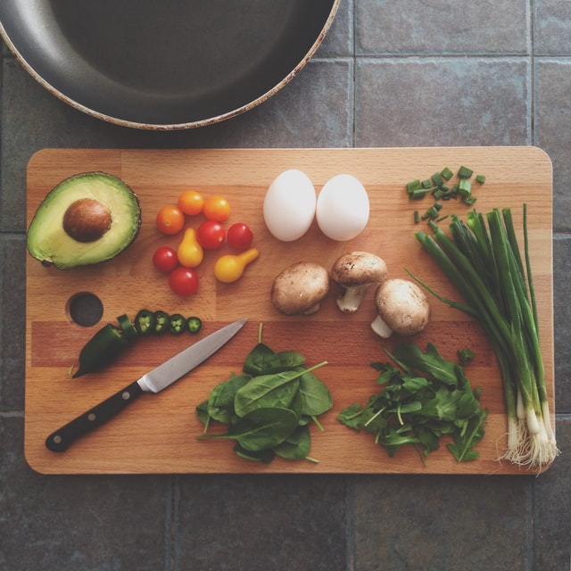

Mais qui est Cuisine-Calédoniénne ?
"Une classe de gourmands un peu geeks"
Une classe qui avait envie de mettre les outils Internet au service de la cuisine caledonienne et de ceux qui la font (ou qui n'osaient pas encore la faire).
Le site Cuisine-Calédoniénne est né suit a un exercice sur le référencement naturel et de permettre le partage de recettes entre internautes et ainsi donner accès à tous à des recettes liée a la Nouvelle Calédonie.
A l'opposé des recettes de chef qu'on n'a aucune chance de réussir ce site propose des recettes faciles à réaliser.
